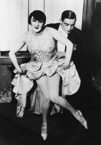
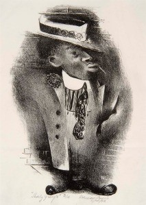
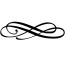

Swing History 101: The Birth of Lindy Hop (Early 1900s – 1929)
October 2, 2013

This is a series for beginner dancers. This post was updated with new information in 2018 and 2019.
Music Comes First
In the world of street dances, the music always comes first. People hear a new music form start to arise, and it's only a matter of time before they begin to move to it. In the 1900s, new American musical forms began to emerge from the Black and Creole communities of New Orleans in popular culture — first ragtime, and then early “hot” jazz — were no exception. Many regional, and soon nationwide, dances began to evolve to this music.
It was in the middle of the 1920s, when the jazz age was going strong, that America encountered one of its first and greatest nation-wide fads: The Charleston. That was in 1923, when it was danced on the stage to a song in the popular all-Black Broadway show Runnin' Wild. (The song is the one that comes into your head when you hear the word“Charleston. ” It was composed by James P. Johnson, an African-American and one of early-20th-century's greatest masters of composition.) However, the step had been around awhile before that.
Made in Carolina
It wasn't simply coincidence the song and dance were named “Charleston.” Johnson had seen the step done as early as the 1910s, when he was improvising piano music for dancers at clubs — most of the dancers doing the step had come from Charleston, and so he called the dance songs he wrote for them “Charlestons.” Other Black performers from South Carolina had done similar steps often enough they were referred to as “geechie” or “gullah” steps, a specific Black culture of Charleston and the low country.
Why was Charleston culture prominent enough in New York to make its way in Broadway musical, where mainstream America took many of its cultural cues? For more than three hundred years in America, the three main harbors on the East Coast were New York, Boston, and Charleston, with constant traffic between the three. This made it relatively easy for people of Charleston to travel to New York, especially those who worked in the shipping or entertainment industries. (There was even such a noticeable group of Charleston jazz musicians that “rice” became the universal nickname they'd use for each other.)
Before the civil war, the South Carolina city was a major port that brought in enslaved peoples from Africa, and it's on that continent that the Charleston step might have begun, or it might have been purely a product of the American-Gullah culture, an offspring of their American experience and African dance traditions. (According to historian Marshall Stearns, the step most likely came from Ashanti African dance movement, however he provides no reason why and the step has little resemblance to any Ashanti dancing available online.) The characteristic of twisting steps, and the forward-and-back characteristics of the dance, however, are found in several cultures of Africa and the diaspora. So the roots of the step, at least, have been around for long time.
Once it hit Broadway in 1923, the Charleston step swept across the nation and came to define the jazz age, even though it was a mainstream infatuation for only a few years. How much of a fad it became is hard to underestimate in modern terms, we have experienced nothing that so completely engulfed all of American culture, Black, White, rich, poor — anyone could do the simple stylized step, as well as add to it a large number of other dance steps that went well to jazz.
The Charleston soon came in both a solo form and a partnered form.
Made in Harlem
The Charleston wasn't the only dance step being done to ragtime and jazz. There were dozens of dances, solo and partnered, and fad dance steps from the 10s to the 40s. (Imagine the “Land of a Thousand Dances” song, thirty or forty years earlier.)
In late 1920s Harlem, New York, for instance, there were at least three partnered dances on the hardwood floors of jazz clubs: Harlem's own style of partnered Charleston, a second dance called The Breakaway, and a third dance we don't know much about called The Collegiate. Frankie Manning and Cynthia Millman described it as a closer-embrace partnered Charleston with kicking heels behind more than swinging legs.
The Breakaway soon began incorporating partnered Charleston steps so that the two dances looked very similar, though the reason the Breakaway was named as such is very important: For a couple counts of music, the dancers would leave closed position (though still connected by at least one hand) before coming back together. This was truly an innovation for this time, and would redefine what partnership dancing could mean.
Lindy's Hop
There is some mythology about the origin of the name Lindy Hop that has been upgraded to fact too often. But it is a great story.
In 1927, Charles Lindbergh crossed the Atlantic on his famous flight. (That part is not a myth.)
It's very important for newspapers to have short, poppy headlines; not only are they trying to catch the reader's eye, they're also trying to use the shortest words possible so that they fit on the page. (Note, for instance, that “Lindbergh” is a long name.) So, one headline of the time read “Lindy Hops for St. Louis!”, among other variations.
It just so happens that around this time, the partnered jazz dances of the predominantly African-American New York neighborhood of Harlem had evolved one step further. The reason I mention the newspaper headlines is because the catchy phrasing of those headlines probably explains the name attached to several dances across the country that were being called New Yorkers were calling the “Lindbergh hop” and “Lindy hop.” But we don't know for sure.
The reason we don't know is because Lindy Hop was a dance invented and evolved by many people over multiple years, and not rigorously historically documented at the time of its birth. What we do have are stories, and not a lot proof to confirm or deny them.
For instance, here's one:
One of the greatest Breakaway and partnered Charleston dancers of Harlem was a man named “Shorty” George Snowden. The story goes that, in 1928, Shorty and his partner Mattie Purnell were in a Manhattan dance marathon, which were popular at the time. As the hours dragged on, they continued to bust out their energetic style of partnered Charleston and Breakaway. A reporter called out to Shorty, “What are you doing with your feet?” “Why, it's the Lindy!” he said.
And thus, according to some historical sources, the Lindy Hop was born and/or named.[*] [For my new readers, clicking on the footnote stars, like the one above, will take you to further information. And sometimes too much information.]
The facts of the story are all possible — however, since this was 1928 (according to Shorty's own recollections), an entire year after Lindbergh's success, chances are the name and dance had been around already. It's also important to note this is not the only story of its invention, and certainly not agreed upon historically. For instance, Malcolm X, who was a Lindy Hopper in the early 1940s, said he had met at least two dozen people in Harlem who claimed to have invented the dance.
What is also a fun fact is that Lindbergh's Hop across the Atlantic inspired several dances called the “Lindy Hop” across the country which are lost to time now and, in all likely hood, were probably pretty simple fad dances. But it does point to media being the probable originator of the term.
The First Great Lindy Hopper
“Shorty George” by Harlem Renaissance painter Norman Lewis.
Regardless of whether or not he was the first to give the name “Lindy Hop” to the dance, Shorty George IS an extremely important figure for us. First off, he was definitely one of the major forces in inventing movements and ideas during Lindy Hop's communal birth, as well as evolving it further throughout the 1930s; he was, by many accounts, the first great Lindy Hopper.
Second of all, he was probably the first to form a group for entertaining people with Lindy Hop and thus was responsible for being the first Lindy Hopper we know of to perform Lindy Hop for audiences.
And, finally, he and his group were the first we know of to ever put Lindy Hop on film:(Or, watch with special Swungover commentary here!)
This is a dance clip of Shorty George in the film “After Seben” in 1929. (The film's name is probably the phrase “After Seven” pronounced with a chewy dialect.) Shorty and Mattie are the third and final couple in the “contest.”
Wait, why isn't Mattie also a “first great Lindy Hopper”?
She might very well have been. But, sadly, we don't know for sure.
A very unfortunate aspect of early Lindy Hop history is that the women and followers of the dance were (and are) not given as much credit as they most likely deserve for their invention and influence.
Though Lindy Hop offered a great deal more of freedom for women and followers (roles which were much more socially tied together then than they are now) than other partnered dances, especially European ones, the 20th century especially was a time where credit was more likely to go to men and leaders for invention and creation in dancing.
Probably the most blatant example of this is the prestigious book Jazz Dance, which is the culmination of decades of research by historian Marshall Stearns. Stearns for some reason chose only three people to be his primary sources in researching the history of Lindy Hop: Shorty George, Al Minns, and Leon James. All men, all primary leaders (Al did a fair share of following, actually).
Stearns apparently didn't track down any of the followers of Shorty's generation, which had performers and innovators in their own right. Nor did Stearns seem to work hard to interview women like Norma Miller, Ann Johnson, and Willa Mae Ricker, whom we know were still around, with their wealth of insight and knowledge. (Norma and Willa Mae had even run their own dance troops.)
Jazz Dance is still the most established academic text on the history of Lindy Hop.
Another sad part of this puzzle is that Mattie would never have gotten to tell her story, even if Stearns would had asked. She passed away in 1930.
These three couples mark the birth of Lindy Hop on film. (Please note the announcer is a white man in black-face, which was sadly a racial insensitivity common in showbiz at the time. Click here for more info on that history.)
At first glance, it might look simply like a variation of partnered Charleston. There are no tuck-turns or side-passes or swivels or air steps or many of the other things that make up our modern idea of Lindy Hop. But the seed was planted for what would become the foundation of our Lindy Hop — the swingout — as well as its most important trait: the ability for partners to express themselves equally both individually and as a partnership.
The dance was already beginning to reflect the heart of jazz music itself: the beautiful harmony of individualism and teamwork.
Transitions
One of the most important characteristics of jazz is that it evolves. We're going to oversimplify a bit, but we think you'll get the gist.** During the 1920s, jazz had a strong, syncopated “vertical” feeling to the rhythm. One of these early rhythms may be described as “boomchick, boom-chick, boom-chick.”
During the late 20s and early 30s, this rhythm began smoothing itself out into a rolling, “horizontal” rhythm. So, by the mid-1930s, the average jazz song had emphasis more on every beat, with a smooth shuffle. Now the rhythm could be described more like “chickta-boom, chickta-boom, chickta-boom.” This rhythm was said “to swing.” And so were its dances.

Wait just a second…
There is, however, one subtle, but huge, unanswered question in all of this.
What was the “Lindy Hop” Shorty George named for the reporter? Over the years I've heard people say a few things. I've heard them say it was the breaking away of a partner to one handed dancing — but as we mentioned, this innovation was already covered by the dance “The Breakaway.” I've heard others say it was a fully-formed dance — but that's not likely, as we saw when we watched After Seben, which still looks a great deal like partnered-Charleston with occasional break-aways thrown in. I've heard others argue that it was his “heels” swing-outs in the After Seben clip. We'll come back to that in a second.
What very few people remember is the very clue Shorty gives us in his own telling of the story. “What are you doing with your feet?”
Shorty later gives even more clues to the riddle. He says in his story: “I was really doing the regular steps, just as we did them at the Savoy, several of us, just a little faster…it was just the speed that confused them maybe…I was having a ball, just doing whatever came into my head.”
So, according to Shorty George, it was fancy footwork that apparently was the trait the reporter was asking Shorty George about, and the answer was fancy footwork styling done regularly at the Savoy that was perhaps done so fast that the reporter didn't realize it was something that had been around. Or, again, perhaps the reporter had not been acquainted with the Savoy dancing in general, and so what was old hat to Shorty was novel to the reporter.
Shorty's final statement adds more mystery: “…doing whatever came into my head.” If this meant “doing whatever Savoy steps came to my head,” then that confirms what he had just said. But if he meant “making steps up on the spot,” then he indeed might have been inventing whatever it was the reporter was asking him the name of. But he is also contradicting himself. This of course is not unheard of, but also could come off as someone trying to change their story a little bit after they've already told it the first time. I personally lean towards the interpretation that doesn't contradict his previous statement.
What that footwork is, we probably won't ever know for sure, but our best idea is probably gotten by watching the After Seben clip. After all, it was only a year later, and the footwork that doesn't look like general Charleston steps would be a probable example of the kind of fancy footwork Shorty would have thrown in the marathon. Doing so, first off, will show that early Harlem Lindy was already a melting pot — you'll see these partners do jig walks, you'll see them do boogie-ing, you'll see them do Texas Tommy-ing. All of which were taken from outside partnered Charleston.
The second couple does a stomp step that is relatively fancy, but one that I can't see being described as a hop. Also of note, they never break-away/swing-out, but, paradoxically, the way they rotate their Charleston looks like a modern swing-out about to happen. This, added with the leaders more athletic position, makes this couple look the most “Lindy” in the way we think of it today.
Finally, Shorty George and Mattie have two moments that stick out: One is simply “breaking” — where he lands into a kind of squat. The other is their “heels” swing-outs, which they do three of, which could be described as a hopping motion — “hopping onto your heels” — and does have them hopping away from each other, a small ocean of dance floor between them.
Perhaps it was this “heels” step that curious reporter saw a year previously. They do it three times, which is a sign they think very highly of the step, like it might be a signature step of theirs — a step they might be famous for, perhaps? I wouldn't be surprised if something like that was so striking and different that it was the first obvious sign of a dance that would come to be the definition of freedom from framework.
This is all just conjecture, and ultimately, what step it was is kind of Swing Dancing's great maguffin. It doesn't really matter that much. It's not likely the footwork that reporter saw is something that would blow the mind of the modern day Lindy Hopper. And our time as historians is probably better spent on things like, for instance, trying to track down the names of the original followers that were not recorded to time as much as the leads. But I constantly come back to the question. And I understand why. Lindy Hop throughout its history and modern expression has become so rich, it makes sense that we want to frame its first dollar and hang it on the wall.
————————————————————————————————————
Homework:
Watch the “After Seben” clip above a few times, taking a few repetitions to concentrate both on leaders and followers. Who are some of your favorite dancers? Why? Reply in comments if you so desire.
Extra Credit (20 pts): Check out the first few episodes of Ken Burns's Jazz documentary. It's usually available on either Netflix or Amazon Prime.
Special Thanks & Historical References:
For this article, I'd like to give a special shout-out to the books Doin' The Charleston by Mark R Jones. A fantastic book on the history of music and dance in the ragtime and hot jazz era, and how much that culture was shaped by the overlooked Black culture of Charleston.
Frankie Manning, Ambassador of Lindy Hop, by Frankie Manning and Cynthia R. Millman (Don't worry, beginner students, you'll learn more about the name Frankie Manning soon, and… This Thing Called Swing, by Christian Batchelor.
And a huge thanks to Cynthia Millman for looking over the article in its development and the useful feedback she gave.
Also, special thanks to vintage jazz musician and historian Craig Gildner for looking over the music sections of the essay and providing further insight. Craig has lent his talent to most of the great modern swing dance bands at one time or another. You can check out his own big band playing here and here. (Always desiring to spread the love of jazz knowledge, he even chose clips of his band that highlight slightly different styles of rhythm.)
And, as always, to my editor, Chelsea Lee.
Footnotes
Hit either “back” on your browser or the footnote symbol beside the footnote to return to a footnote's spot in the original text.
* — At one point, this simple story gained a catchy embellishment: It goes that “Shorty,” when asked about the dance step, happened to see the headline of a newspaper nearby that said “Lindy Hops The Atlantic!” and, inspired, told the reporter “It's the Lindy Hop!” As mentioned in the article above, the marathon, according to Shorty's own version of the story, took place a year or so after Lindbergh crossed the Atlantic, so current newspapers would not have had such a headline (nor has anyone yet found that exact headline in a historical paper). However, this telling of the story is often spread, so don't be surprised if you run across it. (Like many things in jazz anecdote history, it is much more concerned with being a good story than being 100% accurate.)
Now, we do know there were some mentions in newspapers of dances being done called “The Lindy Hop” named after Charles Lindbergh, but those dances are not described and there easily could have been multiple “Lindy Hop” dances after the historic event.
(And, what's interesting to note is that we today don't quite understand how famous Charles Lindbergh was in 1927. One of the common themes of Bill Bryson's book One Summer: America, 1927 is how incredibly famous Charles Lindbergh became after that one single flight — following his landing, he had tours around the country of dozens of parades where thousands upon thousands of people swarmed to see him, even during his plane landings, forcing him to land in nearby fields rather than risk injuring people.)
Shorty George himself retold his famous story using “It's the Lindy” inMarshall Stearns's book Jazz Dance, which is the wording I went with in the main article above, in hopes of being as accurate as possible. Sadly, this is not as catchy as if he had said “it's the Lindy Hop!”
But historians have a duty to be accurate, not catchy. (Which is one reason bad history gets passed around more easily.)
If Shorty remembered correctly (many years after the fact) and did say “Lindy,” then this could possibly mean that the dance had been around long enough for the dancers of it to have abbreviated the name of the dance from “Lindy Hop” to “Lindy,” which I imagine would take at least a few months of the dance being around. However, this conjecture is little more than a whim — who knows if he remembered the incident correctly in the first place, as it occurred during a one-off interview decades before he told the story to Stearns.
Finally, let the record show that Shorty doesn't say in the story that he invented the name, only that he gave a reporter the name of the dance he was doing — a reporter who might have not known what they were dancing in Harlem and so it was only natural to ask what the steps were. You could argue it is implied by the way the story is presented in Stearns' Jazz Dance book, however neither Stearns or George himself actually say it.
There have been debates on Lindy Hop websites about trying to track down the actual proof of some of the stories told, so if you are interested in the debate, there is more out there. One great piece of evidence is this newspaper clipping from a Broadway show mentioning Shorty George, the marathon, and the name “Lindburgh hop.”
** — What we're oversimplifying is the complexity of jazz rhythms and their evolution compared to each other.
For instance, in jazz bands, every instrument in some way contributes to the feeling of the rhythm. Drums, basses, guitars, pianos, and whether or not there's a tuba present will make for different sounds and syncopation. For instance, in the world of 1920s recording equipment, tubas showed up much better on jazz recordings than basses, but a tuba player can only keep a steady hot jazz rhythm without hyperventilating if they play on one beat out of every two. Hence, recordings of 1920s jazz often have an obvious “boom-chick” feel. Many of those same bands played with basses instead of tubas at concerts, which would have had changed the feel of the rhythms from what was heard on the recordings.
Also, when something dramatically changes in jazz, only parts of it change. So, even in the “swing” era, when the new jazz rhythm and use of band orchestration was taking over popular music, there were still groups and individual musicians playing jazz music in 1920s rhythms, and even ragtime rhythms.